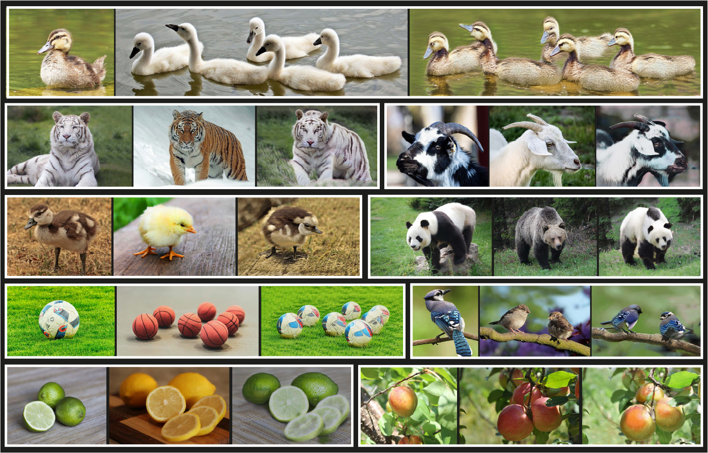

Splicing ViT Features for Semantic Appearance Transfer
| CVPR 2022 Oral |
| Weizmann Institute of Science |
| | Paper | Supplementary Material | Code | Colab | |
| *Equal contribution. |
Abstract
We present a method for semantically transferring the visual appearance of one natural image to another. Specifically, our goal is to generate an image in which objects in a source structure image are "painted" with the visual appearance of their semantically related objects in a target appearance image. Our method works by training a generator given only a single structure/appearance image pair as input. To integrate semantic information into our framework - a pivotal component in tackling this task - our key idea is to leverage a pre-trained and fixed Vision Transformer (ViT) model which serves as an external semantic prior. Specifically, we derive novel representations of structure and appearance extracted from deep ViT features, untwisting them from the learned self-attention modules. We then establish an objective function that splices the desired structure and appearance representations, interweaving them together in the space of ViT features. Our framework, which we term "Splice", does not involve adversarial training, nor does it require any additional input information such as semantic segmentation or correspondences, and can generate high resolution results, e.g., work in HD. We demonstrate high quality results on a variety of in-the-wild image pairs, under significant variations in the number of objects, their pose and appearance.
Semantic Appearance Transfer Results
For each example, shown left-to-right: the target appearance image, the source structure image, and our result. The full set of results is included in the supplementary material. Our model successfully manages to tranfer the appearance from the target appearance image to the source structure image in a semantically meaningful manner. Notice the variability in number of objects, pose, and the significant appearance changes between the images in each pair. |
|  |
CVPR 2022 Oral
Paper
| CVPR Paper | |
Splicing ViT Features for Semantic Appearance Transfer |
| Extended TOG Paper | |
Disentangling Structure and Appearance in ViT Feature Space |
Supplementary Material
 |
Bibtex
CVPR Paper:
Extended TOG Paper:
Acknowledgments
We would like to thank Meirav Galun for her insightful comments and discussion. We thank Oliver Wang and Taesung Park for their help with the comparison to Swapping Autoencoders.